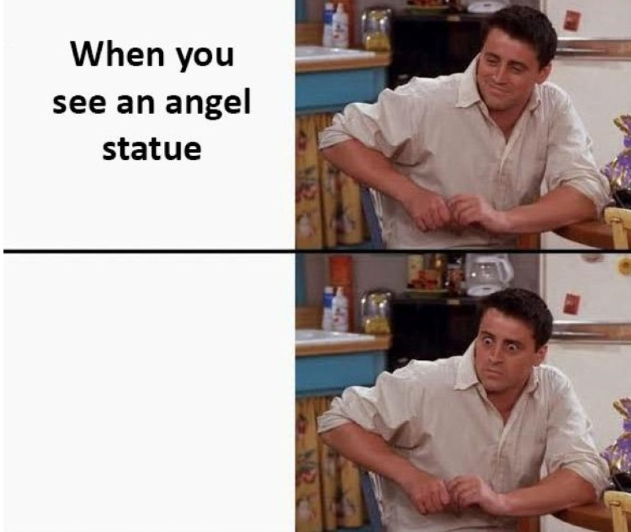
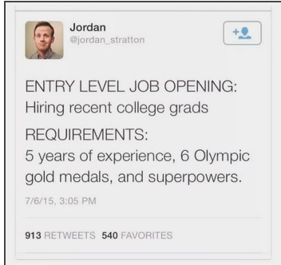
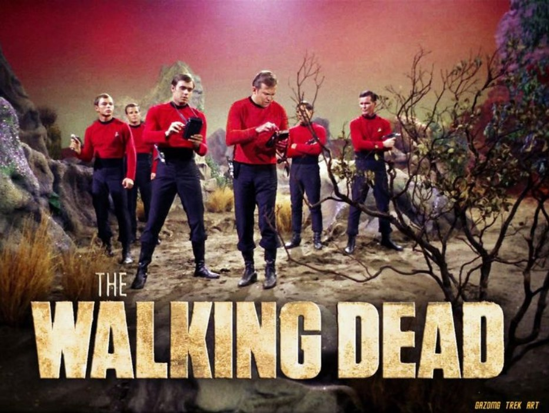

By Katie Williams
Some light memes for bored whovians in a library that want something funny to look at but do not want to laugh too loudly.
Memes that anyone who has attended college will likely understand.
Memes for the Trekkies.
Each meme picture comes from the website below it.